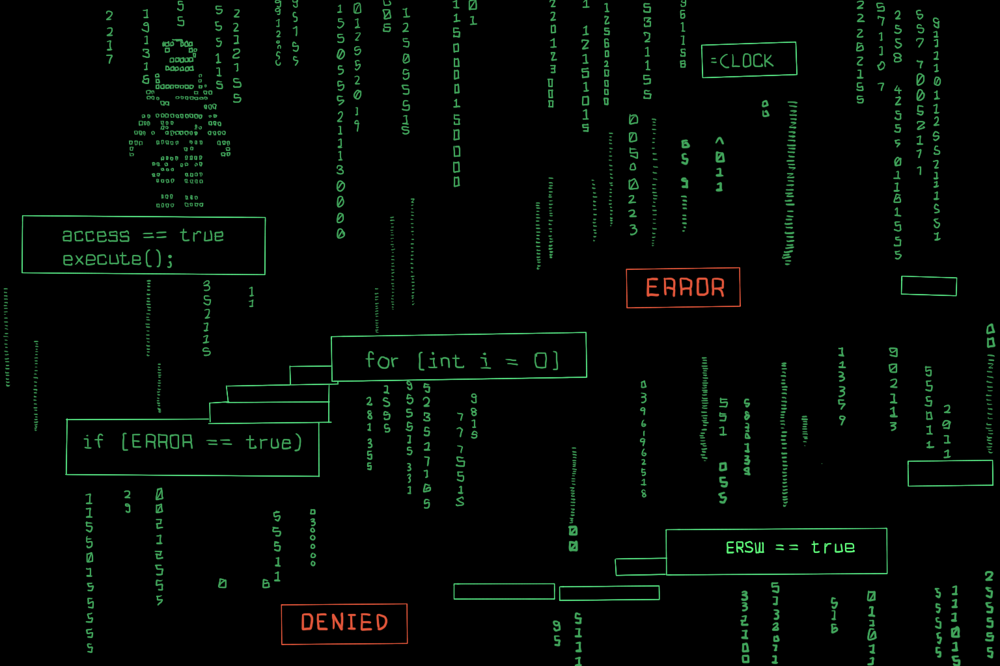
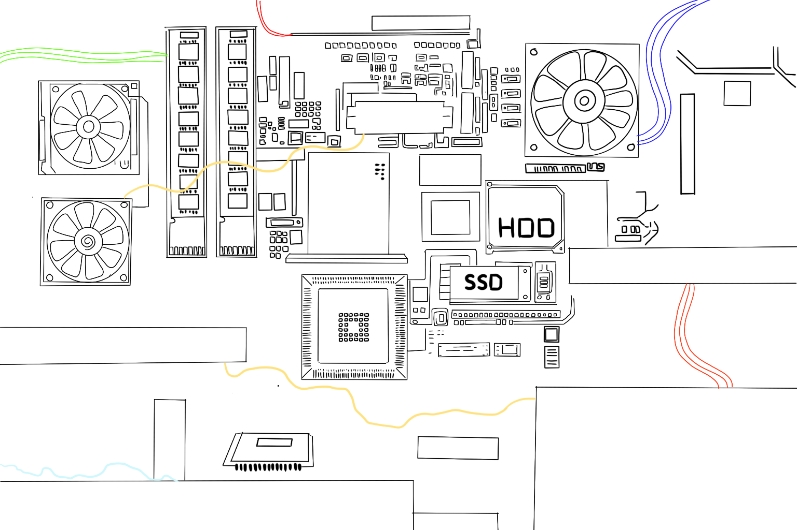
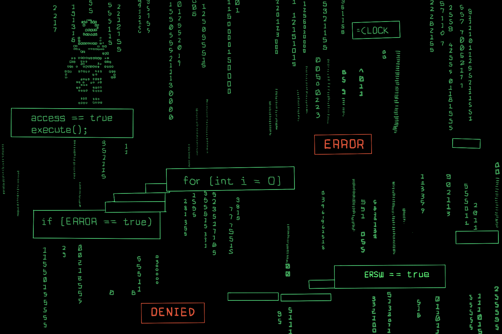
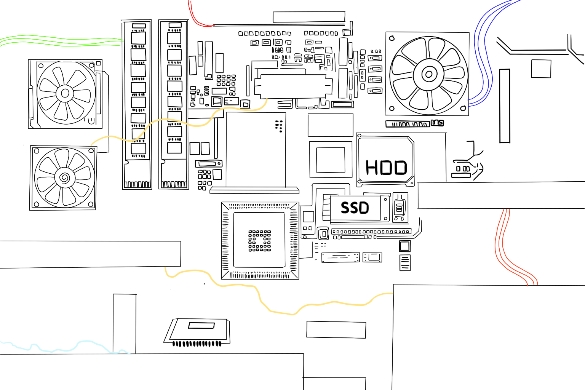

Week 2 — Game Development Document V1
This week, we created our Game Development Document. Victor was in charge of creating our Functional Flowboard for the structure of the game. Ekam was in charge of documenting the Primary Gameplay Mode, with its Core Loop, Resolution Type, and Smart Depth. Ally, our artist, was in charge of character design. Ryan was in charge of a Concept Shot for the Core Loop, showcasing an example run of a level and creating visual representations of key environmental elements. Eva was in charge of the story and narrative flowboard.
For our flowboard, we documented the gameplay of both the maker and the mover. We talked about both players’ inputs and navigation. When designing our game, we had to manage two different player mechanics to fit into one main core loop. While both players perform different actions, their resolution is the same: to beat the level through coordination and communication.

For smart depth, we identified two additions to make things more interesting. While initial levels might seem shallow to ease the player into the mechanics, more capability modifiers will be added to be used to solve puzzles. Eventually, levels will become more complex as more modifiers are added, adding depth to progressing levels. One specific example we discussed was the anti-gravity modifier to platforms, where the maker can pause gravity on platforms. The player would need to decide how to best use this mechanic to solve the puzzle. Another smart depth mechanic we discussed was a star system for levels, like in games such as Overcooked or Angry Birds. Casual players can get through levels by just one-starring each of them, but those who want to master the game mechanics will want to replay previous levels for better times or complete optional objectives, perhaps with the new capability modifiers they earned in later levels they didn’t have before.
We designed our two protagonists: the mover and the maker, to work with each other. We did not want our mover to feel bored while the maker tries to figure out how to aid them, and we did not want our maker to feel bored while the mover does combat or platforming, so we added combat. While the maker solves puzzles, the mover will need to fight. While the mover does platforming, the maker can stun enemies to give the mover more space.
For an example playthrough of a level, we discussed a “weight” item. At first, the maker would use the weight to weigh down buttons for the mover to go around. However, a eureka moment the player can have is using the weight to catapult the mover with some platforms.
After our presentation, we found that we need to address how the core loop is experienced by the two different players. We also need to make sure the smart depth is felt by both players, so neither role feels too shallow. Both roles need to be complex enough that it would be too difficult to control both of them with one player, but not too frustrating that players would not enjoy the game.


 


